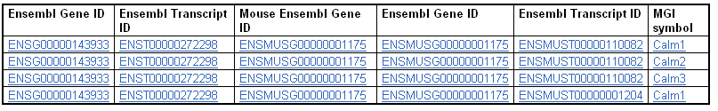
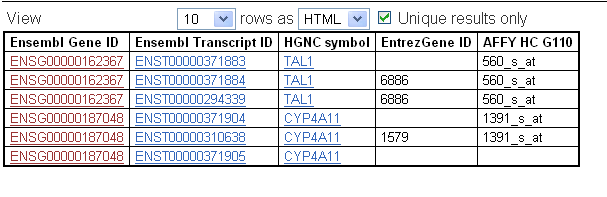
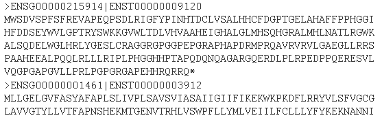
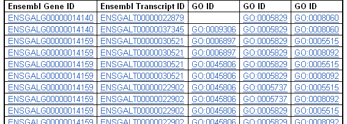
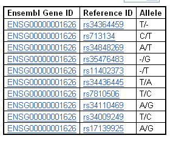
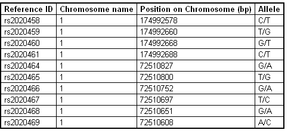
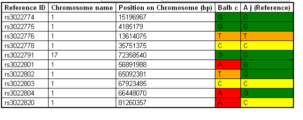
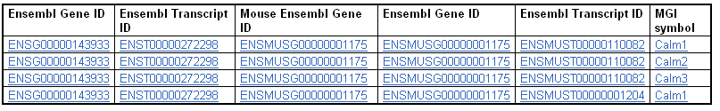

Header: HGNC Symbol, enter in calm1, calm2, calm3... or Browse to upload a file.
MOUSE ORTHOLOGS
Orthologue Attributes: Mouse Ensembl Gene ID
ADVANCED MART:
Select the secondary, linked Dataset.
![[screenshot]](images/faq7a.png)
MGI symbol
Click Results 
Q: I have two Ensembl gene IDs, ENSG00000162367 and ENSG00000187048. How do I get their gene names from HGNC, IDs from EntrezGene, and any probes that contain these gene sequences from the Affymetrix microarray platform HC G110?
A:
Header: Ensembl Gene IDs, Enter the gene names into the box.
Select 'HGNC Symbol' and 'EntrezGene ID'
Select 'Affy HC G110'
Click Results 
Q: How do I export protein sequence on human chromosome 1?
A:
Select Chromosome 1
Select 'Protein'
Click Results 
Q: How can I find all Ensembl genes and transcript IDs between the markers MCW0423 and MCW0431 on chicken chromosome 1? Could I see IDs from the Gene Ontology Consortium, as well?
A:
Chromosome 1
Marker Start MCW0423
Marker End MCW0431
Select 'GO ID' in each catagory
Click Results 
Q: Can I export all variations associated with the human CFTR gene, along with SNP, or Single Nucleotide Polymorphism, alleles?
A:
Header: HGNC symbol, Enter 'CFTR' into the box.
GENE: Deselect Ensembl Transcript ID
GENE ASSOCIATED SNPs: Select Reference ID and Allele
Click Results 
Q: For all SNPs on mouse chromosome 1, I would like the SNP name, allele and base pair position.
A:
Chromosome 1
SNP:Allele
Click Results 
Q:Advanced Mart I would like mouse SNPs on an alternate strain. The reference strain Ensembl uses is C57BL/6J. How do I export SNPs between two other strains A/J and BalbC?
A:
Reference strain:A/J
Strains to compare: Balb/c
Click Results 
Q:Advanced Mart How do I export all mouse homologues for human genes, starting with HGNC symbols Calm1, Calm2 and Calm3? Could I see MGI symbols for the mouse homologues?
A:
Header: HGNC Symbol, enter in calm1, calm2, calm3... or Browse to upload a file.
MOUSE ORTHOLOGS
Orthologue Attributes: Mouse Ensembl Gene ID
ADVANCED MART:
Select the secondary, linked Dataset.
MGI symbol
Click Results 